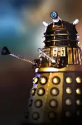
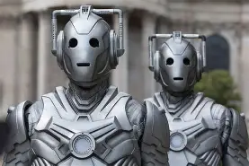
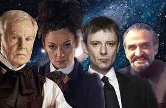
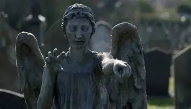
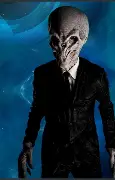

O universo de Doctor Who é vasto, e cada Doutor enfrentou diferentes vilões iniciais e finais,
tanto da era clássica quanto moderna. Alguns vilões clássicos, como os Daleks e Cybermen,
permanecem símbolos da franquia e continuam a reaparecer em novas temporadas

Criados por Davros no planeta Skaro, os Daleks são seres mutantes protegidos por armaduras
metálicas e equipados com uma arma letal que pode exterminar seres vivos. Seu objetivo
principal é eliminar toda vida que não seja Dalek, e eles têm uma longa história de conflito
com o Doutor e os Senhores do Tempo

Originais do planeta Mondas, os Cybermen representam humanos que trocaram partes biológicas
por máquinas, perdendo emoções no processo. Eles acreditam que a humanidade é imperfeita e devem
ser “atualizados”, tentando constantemente converter seres vivos em Cybermen

Um Senhor do Tempo renegado e rival do Doutor, originário do mesmo planeta, Gallifrey.O Mestre
deseja dominar o universo e derrotar o Doutor, utilizando manipulação e inteligência para alcançar
seus objetivos

Criaturas que se parecem com estátuas e só se movem quando não são observadas. Eles enviam suas
vítimas para o passado, alimentando-se da energia temporal delas. Criados por Steven Moffat, são
conhecidos por episódios marcantes como Blink

Seres altos e sem rosto cuja principal característica é que são esquecidos assim que saem do campo
de visão. Eles manipulam humanidades por meio da sugestão hipnótica e têm grande influência em eventos
históricos